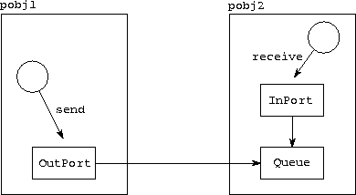

![[DBPP]](pictures//asm_color_tiny.gif)


![[Search]](pictures//search_motif.gif)
In the first of two more substantial examples, we present an implementation of the channel library used in Program 5.3. This case study illustrates how CC++ can be used to develop libraries implementing particular programming paradigms: in this case, channel communication.

Figure 5.8: Data structures used in the CC++
channel library.
In addition to a queue, a channel comprises an OutPort object
and an InPort object used to encapsulate pointers to the queue.
Processes apply send and receive operations to the outport and inport,
respectively.
The channel library provides functions to create a channel, to extract pointers to inport and outport structures, and to send and receive messages. A channel is constructed from three basic data structures: the message queue itself and outport and inport objects used to contain pointers to the queue (Figure 5.8). The outport is created in the same processor object as the sender, while the inport and message queue are created in the same processor object as the receiver.
The implementation, Program 5.15, defines the processor object ChannelUser and the classes Channel, InPort, and OutPort. The processor object provides functions create_inport and create_outport that create the inport and outport associated with a channel; any program wanting to use the channel library must include this processor object as a base class. Recall that this was done when defining the processor object Construction in Program 5.3.
The Channel class provides three public member functions: the constructor Channel, which creates a new channel linking two specified processor objects; get_out_port, which returns a pointer to the channel's outport; and get_in_port, which returns a pointer to the channel's inport.
The InPort class is derived from the Queue class of Program 5.6. It adds to the functions already defined in that class a new function receive, which simply dequeues a message from the queue. Finally, the OutPort class encapsulates a global pointer and provides a send function that invokes an enqueue operation on the message queue referenced by this pointer.
© Copyright 1995 by Ian Foster